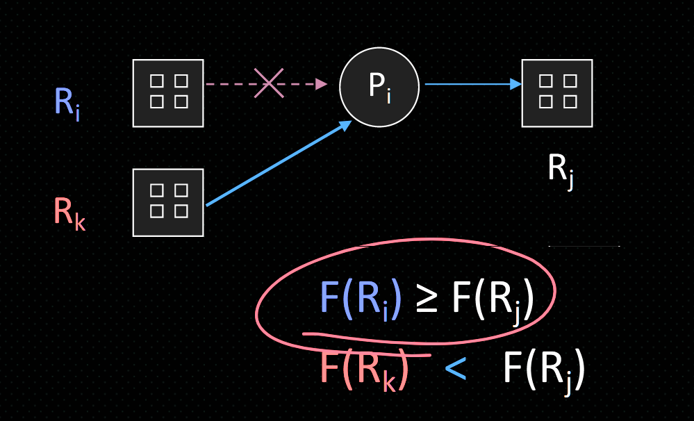
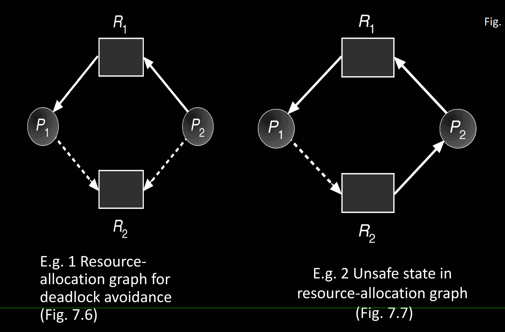
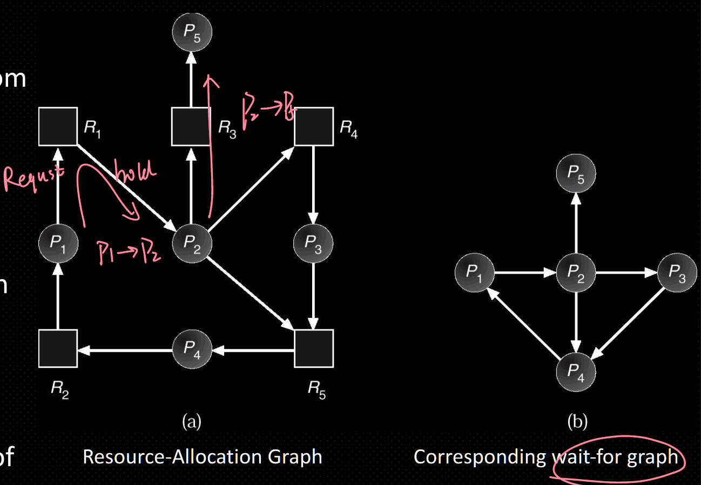

死锁
死锁 deadlock
概念
定义
在计算机科学中，死锁（Deadlock）是指两个或多个进程在执行过程中，由于竞争资源而造成的一种互相等待的现象，从而导致这些进程无法继续执行。
死锁与饥饿的区别
- 发生饥饿的进程可以只有一个，发生死锁的进程有两个或两个以上。
- 发生饥饿的进程可能处于就绪态，比如SJF调度算法中，优先级低的进程可能一直得不到执行机会而处于就绪态，也可能处于阻塞态，如长期得不到I/O设备。而发生死锁的进程一般都处于阻塞态，等待其他进程释放资源。
死锁的必要条件
- 互斥条件（mutual exclusion）：至少有一个资源必须处于非共享模式，即某个资源一次只能被一个进程占用。
- 占有且等待条件（hold and wait）：持有至少一种资源的进程正在等待获取其他进程持有的其他资源
- 非抢占式（no preemption）：进程已获得的资源在未使用完之前，不能被强制剥夺，只能在进程完成其任务后由进程自己释放。
- 循环等待条件（circular wait）：存在一种进程资源的循环等待关系，即P1等待P2占有的资源，P2等待P3占有的资源，…，Pn等待P1占有的资源。 四者缺一不可
死锁处理原则
只要破坏上述四个必要条件中的一个，就可以防止死锁的发生。实际系统中主要采取破坏hold and wait 和circular wait的方法，常用的方法有以下三种：
- 死锁预防（Deadlock Prevention）：通过确保系统永远不会同时满足死锁的四个必要条件之一来防止死锁的发生。
- 死锁避免（Deadlock Avoidance）：通过动态地检查资源分配
- 死锁检测与解除（Deadlock Detection and Recovery）：允许系统进入死锁状态，但通过检测算法来识别死锁，并采取措施来解除死锁。
资源分配图（Resource-allocation Graph）
- 进程

- 资源

- 申请边

- 分配边

- 需求边 申请边变为虚线

注意：分配边是要指向确切的小圆圈的，但是申请边要指到框
环与死锁
- 无环无死锁

- 有环有死锁（单实例资源）

- 有环无死锁（多实例资源）

结论：
- 无环一定无死锁
- 有环不一定有死锁，如果每种资源类型只有一个实例（instance），则死锁，每种资源类型有多个实例，可能出现死锁。
Deadlock Occurrence vs Resource Quantity
- 在进程数目n、资源种类m固定情况下,已知所有进程对资源的最大总需求数L,导致 发生死锁的资源实例总数K的最大值 K= L – n
- 保证无死锁的最少实例总数: K + 1


处理死锁方法
- 确保进程不会进入死锁状态
- 死锁预防
- 死锁避免
- 允许进程进入死锁状态，但系统能检测到死锁并采取措施恢复
- 死锁检测与解除 操作系统不会处理死锁，用户自己解决
死锁预防
互斥：对于可共享资源（例如只读文件）可以放宽互斥约束，即允许多个进程同时访问可共享资源。然而，互斥约束必须适用于不可共享资源（例如打印机）。 eg: 2 MVCC (多版本控制协议) in database systems 很难改变，不现实
占有且等待：要求进程在请求资源之前，必须释放它当前持有的所有资源。这样，进程就不会同时持有资源并等待其他资源，从而避免了死锁的发生。
- 协议一：该进程只能在开始执行之前请求并分配所有所需的资源
- 协议二: 允许进程在其生命周期内多次请求资源
可行性高
缺点：
- 资源利用率低，进程可能因为无法获得所有资源而被阻塞，导致系统性能下降。
- 可能导致饥饿
- 非抢占：允许进程抢占处于waiting态的进程占有的资源,或进入waiting态进程应先释放资源。

该方法适用于状态可以方便地保存和稍后恢复的资源，例如CPU寄存器和内存
- 循环等待：为每种资源类型分配一个唯一的优先级编号，要求进程按照递增的顺序请求资源。这样可以防止循环等待的发生，因为进程只能请求比它当前持有的资源优先级更高的资源。
- 如果Pi请求或持有Ri的实例，那么之后它只能请求资源Rj，使得F(Rj) > F(Ri)
- 每当 Pi 请求 Rj 的实例时，它必须释放所有资源 Ri 使得 F(Ri) ≥ F(Rj)  根据这两个协议，循环等待条件不能成立，并且可以防止死锁，更常用，作为死锁避免和检测的基础
死锁避免
避免死锁同样属于预防死锁的一种方法，但并不是事先采取某种限制措施来避免死锁，而是在资源分配时动态地检查系统状态，确保系统始终处于安全状态，从而避免死锁的发生。 资源分配状态由可用和已分配资源的数量以及进程的最大需求来定义。
安全状态
直观上，如果系统能够为进程分配资源并且仍然避免死锁，则系统处于安全状态。当进程请求可用资源时，系统必须决定立即分配是否使系统处于安全状态 所谓安全状态，是指系统能够按照某种进程推进顺序，为每个进程分配所需的资源，从而使所有进程都能顺利完成执行。 系统处于安全状态一定不会发生死锁，系统不处于安全状态，可能发生死锁
资源分配图算法
该算法只能应用于每种资源类型只有一个实例的系统 该算法通过在资源分配图中引入一种新的边——需求边 (Claim Edge)，来在分配资源前预测分配后系统是否会进入不安全状态（即是否会形成环路），从而避免死锁的发生。
算法工作流程
- 初始状态：当一个进程开始执行时，它会声明所有可能需要用到的资源。在资源分配图中，会为该进程到它可能需要的每个资源画一条需求边。
- 请求资源：当进程 P 实际请求资源 R 时：
- 首先，图中必须已经存在从 P 到 R 的需求边。
- 系统会假装把这条需求边转换成一条分配边 (R → P)。
- 安全性检查：在假装分配后，系统会检查新的资源分配图是否形成了环路。
- 如果形成环路：说明这次分配会导致系统进入不安全状态，可能引发死落。因此，系统不会执行这次分配，进程 P 必须等待。
- 如果没有形成环路：说明这次分配是安全的。系统会正式将需求边转换为分配边，将资源 R 分配给进程 P。
- 释放资源：当进程 P 使用完资源 R 并将其释放时，对应的分配边会被转换回需求边。 
银行家算法（必考大题）
数据结构描述
假设系统中有n个进程和m种资源类型，定义以下数据结构：
- Available（可用资源向量有时也叫work）：一个长度为m的向量，表示此时系统中每种资源类型当前可用的实例数。
- Max（最大需求矩阵）：一个n×m的矩阵，表示每个进程对每种资源类型的最大需求。
- Allocation（分配矩阵）：一个n×m的矩阵，表示每个进程当前已经分配到的每种资源类型的实例数。
- Need（需求矩阵）：一个n×m的矩阵，表示每个进程还需要的每种资源类型的实例数。Need[i][j] = Max[i][j] - Allocation[i][j]
做题步骤
考虑某个系统在下表的状态： 当前可用的A资源有1个，B有5个，C有2个，D有0个(Available=(1,5,2,0))。 （有时给出的条件是系统总资源数，需要先计算Available，即Available = Total - Allocation）
| 进程 | Allocation (已分配) (A, B, C, D) | Max (最大需求) (A, B, C, D) | Need (仍需) (A, B, C, D) |
|---|---|---|---|
| P0 | (0, 0, 1, 2) | (0, 0, 1, 2) | (0, 0, 0, 0) |
| P1 | (1, 0, 0, 0) | (1, 7, 5, 0) | (0, 7, 5, 0) |
| P2 | (1, 3, 5, 4) | (2, 3, 5, 6) | (1, 0, 0, 2) |
| P3 | (0, 0, 1, 4) | (0, 6, 5, 6) | (0, 6, 4, 2) |
Need矩阵是什么样的：
Need[i][j] = Max[i][j] - Allocation[i][j]
进程 Need (仍需) (A, B, C, D) P0 (0, 0, 0, 0) P1 (0, 7, 5, 0) P2 (1, 0, 0, 2) P3 (0, 6, 4, 2) 系统是否处于安全状态？如安全，请给出一个安全序列
一步步的找出当前哪个进程的need小于等于available，将其填入表中 可以得到 （0，0，0，0）< (1，5，2，0) ，所以P0可以执行完毕，释放资源work = (1,5,2,0)+(0,0,1,2)=(1,5,3,2)
| 进程 | Available(work) | Need | Allocation | Available+Allocation |
|---|---|---|---|---|
| P0 | (1,5,2,0) | (0,0,0,0) | (0,0,1,2) | (1,5,3,2) |
work+allocation就是当p0执行完毕释放资源后的新work
继续找下一个进程 可以得到 （1，0，0，2）< (1，5，3，2) ，所以P2可以执行完毕，释放资源work = (1,5,3,2)+(1,3,5,4)=(2,8,8,6)
| 进程 | Available(work) | Need | Allocation | Available+Allocation |
|---|---|---|---|---|
| P0 | (1,5,2,0) | (0,0,0,0) | (0,0,1,2) | (1,5,3,2) |
| P2 | (1,5,3,2) | (1,0,0,2) | (1,3,5,4) | (2,8,8,6) |
继续找下一个进程 可以得到 （0，7，5，0）< (2，8，8，6) ，所以P3可以执行完毕，释放资源work = (2,8,8,6)+(1,0,0,0)=(3,8,8,6)
| 进程 | Available(work) | Need | Allocation | Available+Allocation |
|---|---|---|---|---|
| P0 | (1,5,2,0) | (0,0,0,0) | (0,0,1,2) | (1,5,3,2) |
| P2 | (1,5,3,2) | (1,0,0,2) | (1,3,5,4) | (2,8,8,6) |
| P3 | (2,8,8,6) | (0,7,5,0) | (1,0,0,0) | (3,8,8,6) |
继续找下一个进程 可以得到 （0，6，4，2）< (3，8，8，6) ，所以P1可以执行完毕，释放资源work = (3,8,8,6)+(0,0,1,4)=(3,8,9,10)
| 进程 | Available(work) | Need | Allocation | Available+Allocation |
|---|---|---|---|---|
| P0 | (1,5,2,0) | (0,0,0,0) | (0,0,1,2) | (1,5,3,2) |
| P2 | (1,5,3,2) | (1,0,0,2) | (1,3,5,4) | (2,8,8,6) |
| P3 | (2,8,8,6) | (0,7,5,0) | (1,0,0,0) | (3,8,8,6) |
| P1 | (3,8,8,6) | (0,6,4,2) | (0,0,1,4) | (3,8,9,10) |
所以存在一个安全序列 p0,p2,p3,p1，系统处于安全状态
若进程p1发来一个请求（0，4，2，0），这个请求能否立刻被满足？如安全，请给出一个安全序列。
这种问题就是先假设分配给p1，然后再判断系统是否处于安全状态 假设分配给p1后： Available = (1,5,2,0)-(0,4,2,0) = (1,1,0,0)
进程 Allocation (已分配) (A, B, C, D) Max (最大需求) (A, B, C, D) Need (仍需) (A, B, C, D) P0 (0, 0, 1, 2) (0, 0, 1, 2) (0, 0, 0, 0) P1 (1, 4, 2, 0) (1, 7, 5, 0) (0, 3, 3, 0) P2 (1, 3, 5, 4) (2, 3, 5, 6) (1, 0, 0, 2) P3 (0, 0, 1, 4) (0, 6, 5, 6) (0, 6, 4, 2) 然后再进行安全性分析
如果系统进入不安全状态，有可能发生死锁 注意，是有可能，不是一定会发生死锁
死锁检测与解除
死锁避免的缺点：算法复杂
原理：让系统进入死锁状态，通过检测算法发现死锁，通过恢复方案克服死锁
单实例资源系统检测
定期调用检测算法来搜索图中的循环，有循环就有死锁，时间复杂度O(n2) 
多实例资源系统检测
死锁检测算法类似于银行家算法 数据结构：
- Available（可用资源向量有时也叫work）：一个长度为m的向量，表示此时系统中每种资源类型当前可用的实例数。
- Allocation（分配矩阵）：一个n×m的矩阵，表示每个进程当前已经分配到的每种资源类型的实例数。
- Request（请求矩阵）：一个n×m的矩阵，表示每个进程当前正在请求的每种资源类型的实例数。
算法步骤：
- 创建一个布尔向量 Finish，长度为进程数量。 如果某个进程 Pᵢ 没有占用任何资源 (Allocation[i] 为全0)，那么它不可能是死锁环的一部分，我们视其为已完成，Finish[i] = true。 否则，假设它未完成，Finish[i] = false。
- 从所有进程中，找出一个满足以下两个条件的进程 Pᵢ：
- Finish[i] == false (这个进程当前被认为是“未完成”的)
- Request[i] <= Work (它当前等待的资源小于或等于系统模拟中可用的资源)
- 如果找到了这样一个进程
Pᵢ，这意味着它有希望被满足。我们乐观地假设它获得了资源，执行完毕，然后释放了它占有的所有资源。
- 更新模拟可用资源：Work = Work + Allocation[i]。
- 标记该进程为已完成：Finish[i] = true。
- 回到第 2 步，继续寻找下一个可以被满足的进程。 如果找不到任何满足条件的进程，则进入第 4 步。
- 算法结束后，检查 Finish 向量。 如果存在任何一个 Finish[i] 的值仍然为 false，那么系统就处于死锁状态。 所有 Finish[i] == false 的进程 Pᵢ 都被认为是死锁进程。
例子： 五个进程 P0 到 P6，三种资源类型，A 有 7 个实例，B 有 2 个实例，C 有 6 个实例。
| 进程 | Allocation | Request | Available | Finish |
|---|---|---|---|---|
| P0 | 0 1 0 | 0 0 0 | 0 0 0 | false |
| P1 | 2 0 0 | 2 0 2 | 0 0 0 | false |
| P2 | 3 0 3 | 0 0 1 | 0 0 0 | false |
| P3 | 2 1 1 | 1 0 0 | 0 0 0 | false |
| P4 | 0 0 2 | 0 0 2 | 0 0 0 | false |
初始状态: Available = (0, 0, 0)
Allocation 和 Request 矩阵如表格所示。
运行检测算法:
初始化: Work = (0, 0, 0)。
P₀ 的 Allocation 是 (0, 1, 0)，不为0 -> Finish[0] = false。
P₁ 的 Allocation 是 (2, 0, 0)，不为0 -> Finish[1] = false。
… 以此类推，所有进程的 Finish 都为 false。
第一轮寻找:P₀: Request₀(0,0,0) <= Work(0,0,0)。条件满足！ 模拟 P₀ 完成: Work = Work + Allocation₀ = (0,0,0) + (0,1,0) = (0,1,0)。 Finish[0] = true。
第二轮寻找 (此时 Work = (0,1,0)):
P₁: Request₁(2,0,2) 不小于等于 Work(0,1,0)。
P₂: Request₂(0,0,1) 不小于等于 Work(0,1,0)。
P₃: Request₃(1,0,0) 不小于等于 Work(0,1,0)。
P₄: Request₄(0,0,2) 不小于等于 Work(0,1,0)。
找不到更多进程: 算法无法再找到任何可以满足的进程了。
- 最终判断: Finish 向量为 [true, false, false, false, false]。 由于 Finish[1], Finish[2], Finish[3], Finish[4] 均为 false，系统确认存在死锁。 死锁的进程是 P₁, P₂, P₃, 和 P₄。
死锁解除
进程终止
- 终止所有死锁进程：简单但代价高昂，要重新计算
- 一次终止一个死锁进程，直到死锁解除
选择策略：
- 优先终止占用资源少的进程
- 优先终止执行时间短的进程
- 优先终止优先级低的进程
- 优先终止已运行时间少的进程
- 优先终止资源需求增长慢的进程
资源抢占
剥夺某些资源分配给其他进程
- 抢占哪些资源和进程
- 回滚
- 饥饿问题